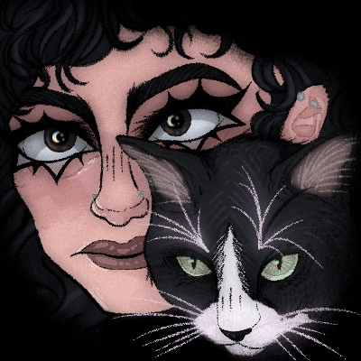

My name is Christina Guardado...

I was born and raised in San Francisco on January 29, 2001. My mom was born in Jalisco, Mexico,
and my Dad was born in San Salvador, El Salvador. They both migrated to the U.S. in the mid to late 70’s.
I’m the middle child of the family. I have an older brother (3 years older) and a younger sister (6 years younger).
We got a cat back in 2020 named Casper. He’s very dumb, he eats plastic a lot, and he’s always hungry, but he’s adorable, and we love him regardless.
I’ve always been very shy/introverted, especially when it comes to talking about my interests. I’ve always loved art (drawing and music)
since I was a young girl, and I've known for a very long time that I wanted to have an art career. I love horror and media with horror/religious themes,
and I base a lot of my own art on these aesthetics. I’m a design major with a minor in comics making. I first started drawing by making little fan comics
of random shows and movies I loved when I was in middle school. This led me to slowly create a whole new story of my own that I’m still trying to figure out now.
I still have a lot to learn since I’ve been (poorly) teaching myself how to draw.
My dream career was to be an animator, but once I got into college, I realized this path wasn’t for me anymore. At this point, I’m aiming towards being a tattoo artist,
but I still have a lot of practice and refining my art before I even try anything in that realm. I can’t imagine doing anything not related to art in my future;
it’s been a rocky road getting there, but I’m not giving up yet.
Some art I still like...

Casper hard at work...
Instagram: @faux0buggy